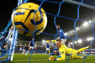
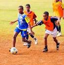
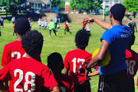

Soccer is the other name of the football which requires two teams with 11 players each.
Each team tries to get the ball into the other team’s goal without using their hands or arms.
In Soccer, the player has to kick the ball into the other team’s goal to score a point for their team.
The team that scores higher goals is the winner.
Football or soccer is the world’s most famous sport with a high number of participants and spectators.
Like cricket, football also has a governing body with the name of FIFA ( Federation de Football Association).

The game of football involves or needs basic skills like passing, controlling the ball.
A good soccer player... has to continually work on his skills to improve them.
Soccer is a good game to maintain health, strength and is also a good workout for everyone.
But to be good at any game a player needs to be focused and disciplined.
Soccer (also known as football) is a team-based sport played in two 45-minute halves with a 15 minute half-time break.
A team has 11 players on the field during a game – 10 field players plus a goalkeeper.
A team can also have 3 substitute players. Once a player is substituted off they cannot play again in the match.
Other than the goal keeper, players are unable to use their hands during a match so must be very skilful with using their feet
and body to control the ball during play.
Soccer is played year round with the number of weekly matches varying between competitions.
In Australia, the main competitive season (A-League) is played between October and May and involves one match per week, usually on weekends.
There are also major international tournaments such as the World Cup (held every 4 years).
Soccer training sessions and matches are comprised of aerobic and anaerobic activity.
Soccer training can be physically demanding depending on the level of competition.
Individual nutrition requirements will be determined by training load, specific athlete needs, training goals, body composition goals, health and adjustment for growth in younger players.
"You dont stop playing because you are old ,you grow old because you stop playing"


Football or soccer is the world’s most famous sport with a high number of participants and spectators.
Like cricket, football also has a governing body with the name of FIFA ( Federation de Football Association).
The game of football involves or needs basic skills like passing, controlling the ball.
A good soccer player has to continually work on his skills to improve them.
Soccer is a good game to maintain health, strength and is also a good workout for everyone.
But to be good at any game a player needs to be focused and disciplined.
"We live with motivation!"
Why people hate soccer is a mystery. The haters continuously say, "It's a sport for people with no strength,"
"It's too long and boring," and "It's just a bunch of fairies running around.
" Now that's just funny to hear, because it takes tremendous skill to get where the pros go.
We're all entitled to have opinions; however, if us soccer fans were to talk smack on other sports, whether it's football,
baseball or basketball, their fans get defensive and act like their sport is the best in the world.
Soccer players must be skilled, fast, agile and strong with a high level of aerobic fitness.
Although soccer players come in various shapes and sizes, low body fat levels can be beneficial for speed and agility.
“In football [soccer], the result is an impostor. You can do things really, really well but not win.
There’s something greater than the result, more lasting — a legacy.”
"Xavi"Soccer is favorite spots beacuse it relives and u can do everithing that
you see.Enjoying things other do and kjeeps us motivated.
Soccer (also known as football) is a team-based sport played in two 45-minute halves with a 15 minute half-time break.
A team has 11 players on the field during a game – 10 field players plus a goalkeeper. A team can also have 3 substitute players.
Once a player is substituted off they cannot play again in the match.